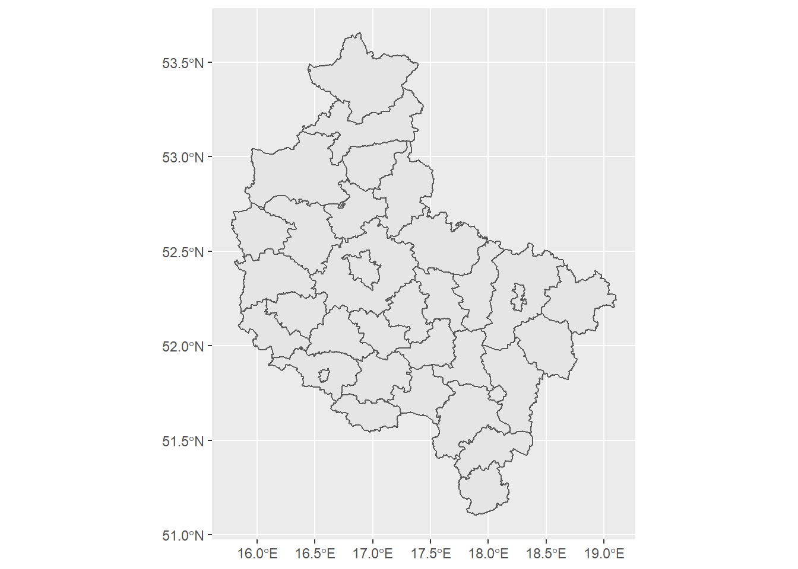

Tworzenie prostego kartogramu ćw.2
Korzystając z danych w pliku wynagrodzenia.xlsx, stwórz kartogram prezentujących rozkład przeciętnyh miesięcznych wynagrodzeń brutto w powiatach województwa wielkoplskiego w 2019 roku.
W pierwszej kolejności wczytujemy dane przestrzenne za pomocą funkcji read_sf z pakietu sf, a następnie dane atrybutowe dla powiatów województwa wielkopolskiego za pomocą funkcji read_xlsx z pakietu readxl. Ograniczamy zbiór danych przestrzennych do powiatóW województwa wielkopolskiego i dodatkowo tworzymy w zbiorze mieszk czteroznakowy kod województwa za pomocą funkcji substr i zapisujemy go w zmiennej o nazwie kod_pow2 Łączymy oba obiekty w jeden zbiór za pomocą funkcji merge deklarując nazwy zmiennych, po których łączymy obydwa zbiory.
pow<-read_sf("dane/gadm36_POL_2.shp")
wages<-read_xlsx("dane/wynagrodzenia.xlsx")
pow_wlkp<-pow[pow$NAME_1=='Wielkopolskie',]
wages$KOD_POW2<-substr(wages$KOD_POW,1,4)
dane_2<-merge(pow_wlkp,wages,by.x="CC_2",by.y="KOD_POW2")W niniejszym przykładzie skorzystamy z legendy dla zmiennych ciągłych, dlatego nie dzielimy zmienności badanej cech na przedziały.
Mapa konturowa powiatóW województwa wielkopolskiego
par(mai=rep(0,4),mar=rep(0,4))
ggplot(data=dane_2) +
geom_sf()
Dodanie tytułu i opisu osi wykresu mapowego.
par(mai=rep(0,4),mar=rep(0,4))
ggplot(data=dane_2) +
geom_sf() +
xlab("Długość geograficzna")+ylab("Szerokość geograficzna") +
ggtitle("Przeciętne miesięczne Wynagrodzenie brutto w 2019 roku", subtitle = "Bez podmiotów gospodarczych do 9 osób")Wyłączenie wyświetlania siatki i współrzędnych geograficznych, białe tło.
par(mai=rep(0,4),mar=rep(0,4))
ggplot(data=dane_2) +
geom_sf(fill=NA) +
ggtitle("Przeciętne miesięczne Wynagrodzenie brutto w 2019 roku", subtitle = "Bez podmiotów gospodarczych do 9 osób") +
theme(rect=element_blank(), axis.ticks = element_blank(), axis.text.x = element_blank(), axis.text.y = element_blank())Kolorystyka mapy, legenda.
par(mai=rep(0,4),mar=rep(0,4))
ggplot(dane_2) +
geom_sf(aes(fill=WAGES)) +
scale_fill_continuous(low="yellow", high="red",name="Wynagrodzenie\nw zł") +
ggtitle("Przeciętne miesięczne Wynagrodzenie brutto w 2019 roku", subtitle = "Bez podmiotów gospodarczych do 9 osób") +
theme(rect=element_blank(), axis.ticks = element_blank(), axis.text.x = element_blank(), axis.text.y = element_blank(),
legend.position = "right")Dodanie adnotacji oraz etykiet - nazw województw i wartości wskaźnika.
par(mai=rep(0,4),mar=rep(0,4))
ggplot(dane_2) +
geom_sf(aes(fill=WAGES)) +
scale_fill_continuous(low="yellow", high="red",name="Wynagrodzenie\nw zł") +
ggtitle("Przeciętne miesięczne Wynagrodzenie brutto w 2019 roku", subtitle = "Bez podmiotów gospodarczych do 9 osób") +
geom_sf_text(mapping=aes(label=NAME_2),size=2.5)+
geom_sf_text(mapping=aes(label=WAGES),size=2.5,nudge_y = -0.05) +
annotate("text",x=18.5,y=53.5, label="Polska = 5181,63",size=3) +
annotate("text",x=18.5,y=53.3, label="Wielkopolskie = 4687,39",size=3) +
theme(rect=element_blank(), axis.ticks = element_blank(), axis.text.x = element_blank(), axis.text.y = element_blank(),
legend.position = "right", axis.title.x = element_blank(),axis.title.y = element_blank())## Warning in st_point_on_surface.sfc(sf::st_zm(x)): st_point_on_surface may not give correct results for longitude/latitude data
## Warning in st_point_on_surface.sfc(sf::st_zm(x)): st_point_on_surface may not give correct results for longitude/latitude data